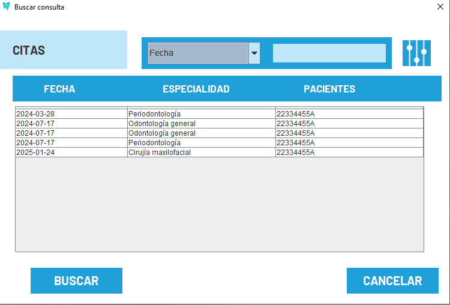
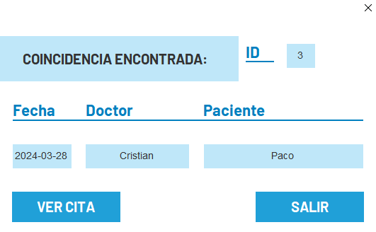
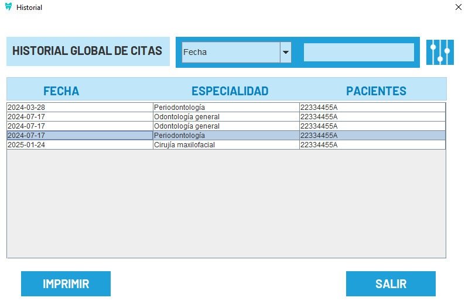
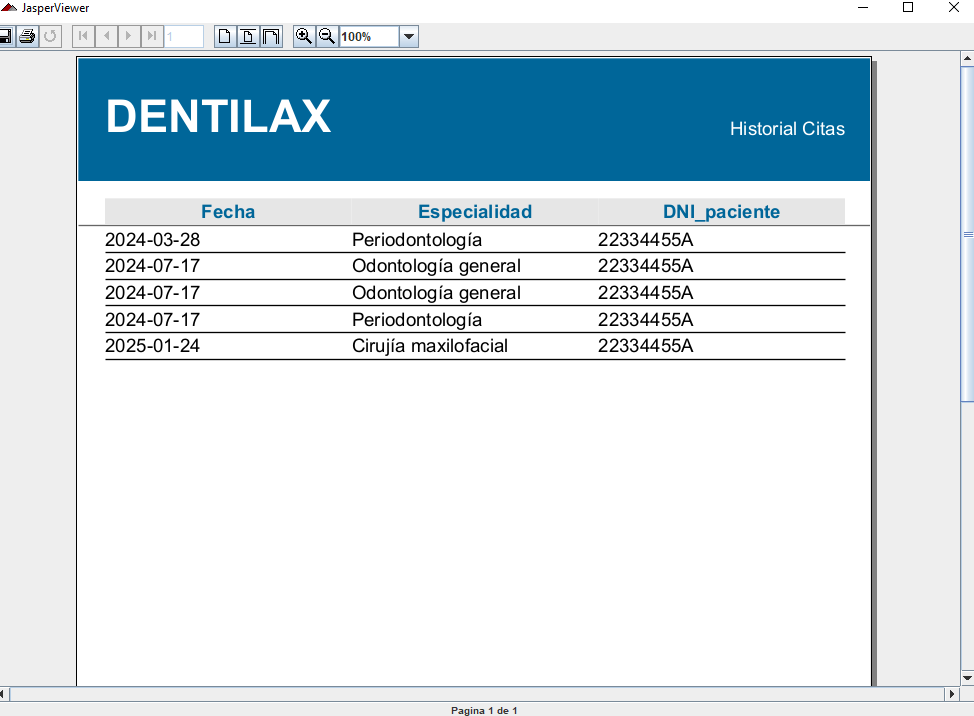
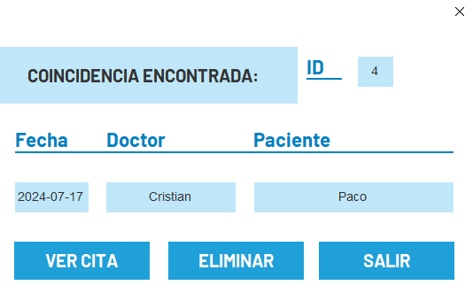
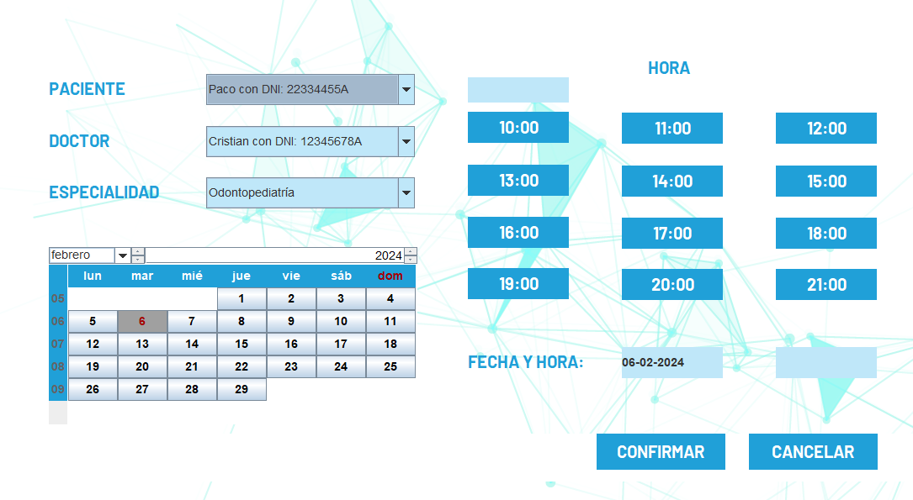
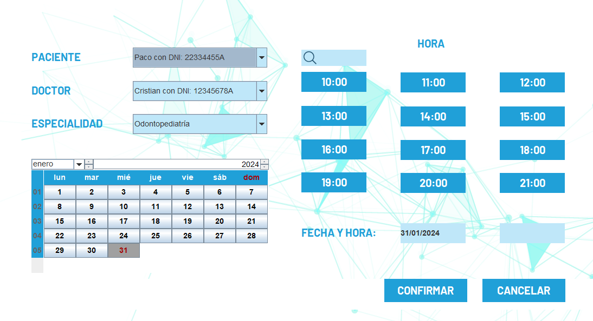

Se mostrará una tabla con la información de todas las citas programadas y pasadas. Puede utilizar un filtro para buscar por fecha, DNI y especialidad. Al seleccionar una cita, accederá a más detalles:
Posteriormente, podrá acceder a toda la información de la cita mediante diferentes botones:
En esta sección, encontrará un historial de todas las citas anteriores. Puede explorar la tabla y utilizar un buscador para encontrar citas específicas:
Podrá imprimir la información sobre todas las citas (o filtradas en su defecto) con el botón "imprimir":
Para eliminar una cita, puede buscarla en la tabla de citas programadas y seleccionar la opción de eliminar. Se solicitará confirmación antes de realizar la eliminación, pero no podrá eliminar citas ya pasadas:
Para realizar modificaciones en una cita existente, puede buscarla en la tabla de citas programadas y seleccionar la opción de modificar. Se abrirá una pantalla para realizar los cambios necesarios:
Para programar una nueva cita, se abrirá una pantalla para establecer los parámetros necesarios
